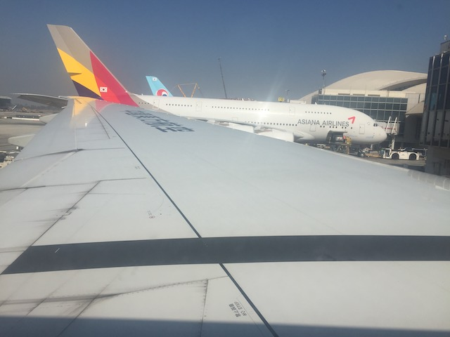
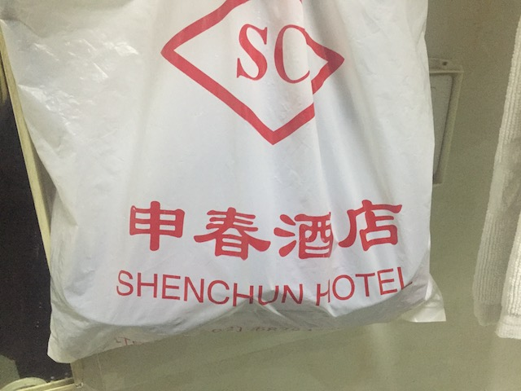
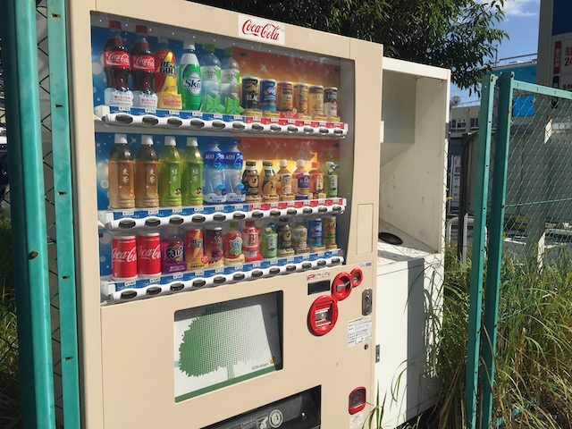
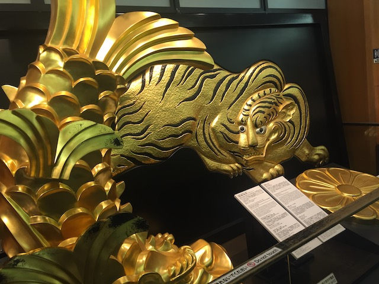
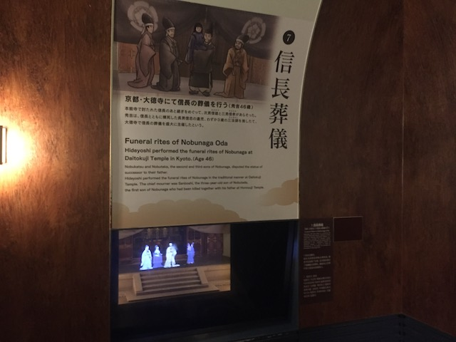

| |
JAPAN 2018!!! =)
Osaka
Universal Studios Japan Parque Espana Nagashima Spaland Hiroshima & Kyoto Tobu Zoo Fuji-Q Highlands
Tokyo Joypolis Tokyo Dome City Yomiuriland Sea Paradise Hamanako Pal Pal Tokyo Disney Resort Yokohama Cosmoworld
Toshimaen
 All right. If you've known me over the years, then you'll know that I have been trying to get my ass to Japan for the past 4 years. My original plan was to do Japan in 2015 (As I repeatedly mentioned before). But unfortunatly, because Scandinavia essentially ruined me financially, I just could NOT afford to do Japan in 2015. Oh well. Japan 2016. TOO BROKE!!! Japan 2017. TOO BROKE!!!! And I'm still pissed that I missed Space World. ='( Japan 2018. I HAVE THE MONEY!!!! I'M FINALLY F*CKING GOING TO JAPAN!!! Yeah, I had the money to do a couple small trips during the "I'M BROKE!!! FINANCIAL LOCKDOWN!!!" era from 2015-2017 (As well as a big non-coaster trip that was totally unplanned and came out of nowhere). But small domestic trips like those are cheap, easy, and I had to do SOME travelling so I wouldn't go crazy. even when I'm in financial lockdown (Hell, I even did one this year on top of Japan, since they're that affordable). But yeah. I FINALLY have the money to do the Japan trip I have been planning for FOUR F*CKING YEARS!!! Hell, some friends have always known me as "In the process of saving up to do Japan". Still feels weird that this day is finally here! =)
All right. If you've known me over the years, then you'll know that I have been trying to get my ass to Japan for the past 4 years. My original plan was to do Japan in 2015 (As I repeatedly mentioned before). But unfortunatly, because Scandinavia essentially ruined me financially, I just could NOT afford to do Japan in 2015. Oh well. Japan 2016. TOO BROKE!!! Japan 2017. TOO BROKE!!!! And I'm still pissed that I missed Space World. ='( Japan 2018. I HAVE THE MONEY!!!! I'M FINALLY F*CKING GOING TO JAPAN!!! Yeah, I had the money to do a couple small trips during the "I'M BROKE!!! FINANCIAL LOCKDOWN!!!" era from 2015-2017 (As well as a big non-coaster trip that was totally unplanned and came out of nowhere). But small domestic trips like those are cheap, easy, and I had to do SOME travelling so I wouldn't go crazy. even when I'm in financial lockdown (Hell, I even did one this year on top of Japan, since they're that affordable). But yeah. I FINALLY have the money to do the Japan trip I have been planning for FOUR F*CKING YEARS!!! Hell, some friends have always known me as "In the process of saving up to do Japan". Still feels weird that this day is finally here! =)

All right! I'm ready to board that plane and cross the Pacific!
Finally heading out to Jap...Shanghai? CRAP!!! I'm not doing Shanghai until I do my China Trip sometime in the future! Right now, I want to go to Japan!
So let's talk about China Eastern Airlines. I had never flown this airline prior to this trip (New Airline credit!) and I'm assuming most of you haven't flown on this airline. So I wasn't sure whether this would be a good airline or not. And...my thoughts are mixed. When it comes to actually flying with them and being in the air, Thumbs up. The seats are good (Which is good since this was a 14 hour flight), they have decent flight entertainment (Thank god for that Language Learning Game), and while the flight food wasn't exactly good, they certainly don't forget to feed you (as shown here). However, all the stuff involving pre-boarding and checking in, Thumbs down. GOOD GOD!!! Their App is the WORST!!! 1 STAR!!! It took me 30 minutes and digging through old emails to check in, and they wouldn't let me check into both of my flights! Yeah. I had to then check in a second time for my connecting flight from Shanghai to Tokyo! Using one of those kiosks like in the pre-app days, in Chinese, at 6 AM, yeah. I was pissed about that. But hey, for $509, totally worth it (Fun fact, my Japan Airfare was slightly less than half as much as my Scandinavia Airfare).
We have landed in Shanghai, and...the sky is brown here. Thanks pollution. Though seriously, while Shanghai does make L.A look like Salt Lake City, it wasn't quite as bad as I was anticipating. That, and while Shanghai normally makes L.A look clean in comparison, when wildfire season is in the air, like right when I got back from Japan, all the smoke and ash in the air makes the air quality so bad that the air in F*CKING SHANGHAI IS BETTER THAN L.A WILDFIRE AIR!!!
So yeah. I'm going to Japan, Shanghai is just a layover. However, it was a 17 hour layover, and I was NOT gonna spend 17 hours in the airport (Thank god China has 24 hour visa-free travel). So yeah. I got myself a hotel (The $50 I saved by taking this flight instead of the direct flight, just went into the hotel for the layover. Didn't think that through. Oh well) and was hoping to see a little bit of Shanghai.

In case you were curious as to which specific Shanghai hotel I resided in.
"Meow! Welcome to China! Better hope we don't wind up on your dinner plate!"
So unfortunetly, while I did explore a little bit of Shanghai, it was all the local stuff way out on the outskirts. I never got to see any of the famous stuff in Shanghai like I was hoping to. But hey. Let's see if there's anything to discover in this local unintersting part of Shanghai.
So one thing I did was try and see what local places there were to eat at. And...I wound up at...this place. It has no name, and it literally is just a tent. I thought I was walking by some random Chinese Families house until they waved me in. Seriously, this looks like the food stand at a High School Track Meet.
I wanted something local, and I got it. These people were talking to me primarily in Chinese, with a little broken English. And I was just cluelessly just saying "Yes. Yes. Yes." to their questions, since...I don't know a single word of Chinese. And they served me. I didn't know what meat it was at first. All I knew was..."Hmm. Tastes like chicken. Also has a TON of bones". I grab this peice and...HOLY SH*T!!! IT'S A HEAD!!! A CHICKEN HEAD!!! My mind flashes back to a couple Chinese Photo TRs where they showed that they served the entire chicken, including the head. I was...wasn't even sure how I was supposed to eat this. There's not much meat around the head. It's just the skull with some fat around the neck. And when you consider the fact that I was really full at this point, I just don't eat the head. And after reading online about how you eat the chicken head, it kind of freaks me out a little. I mean, that chicken is staring at me, with a look in its eye that screams "F*CK YOU KEVIN!", and while I'm a total carnivore, even I get a little uncomfortable at eating something that is staring at me while I eat it. And even more uncomfortable at the idea of cracking open an animals skull to slurp its brains. But also to be fair, I am a morbidly curious person, and there is a voice in my head that says "You should've done it. Be adventerous. Be crazy. Eat the chicken head you pussy.". Not sure if I offended the Chinese family by leaving behind the head (Hey. I did eat the other parts, including the feet. Very VERY boney), but just couldn't stomach the head.
 After a dinner of chicken head, also walked through some Chinese convienence store and grabbed...some local snacks. Eh, the drink was essentially Propel, and...I saved the cookies for later.
After a dinner of chicken head, also walked through some Chinese convienence store and grabbed...some local snacks. Eh, the drink was essentially Propel, and...I saved the cookies for later.
Want some privacy while you shower? TOO BAD!!! Everyone in your room can see you shower!
Ooh! Shanghai Disneyland! Unfortunetly, I did not get to do that this trip since...this is my Japan Trip. Not my China Trip. But hey. Next time.
Back at the Shanghai Airport, ready to FINALLY fly to Japan. I'll talk A LOT more about this airport coming home, but for now, one plus about the Pudong Airport, all these Pandas in the airport. They have pictures of them on the wall, as well as statues of them right outside. I like that. Pandas are awesome.
"I MADE IT!!! I MADE IT!!! I MADE IT!!!"
Quick tip for anyone doing a Japan Trip. Get the Japan Rail Pass. Seriously, you can NOT do Japan without one of these. Don't even think about renting a car. Unlike in my home country, public transportation is actually awesome here. The trains will take you almost anywhere you need to go. And trust me. The Japan Rail Pass pays for itself VERY quickly (even with private lines they don't cover and you still have to pay up for)! I can't recommend this enough!
Ahh. The Shinkansen. The jugular vein of Japan. You need to get anywhere in Japan? Shinkansen will take you there. For instance, I flew into Tokyo, but my trip starts in Osaka. What's a dumb American to do? SHINKANSEN!!!
All right. So I'm standing here at the train station, waiting for the Shinkansen to Osaka. Might as well grab a snack, when...I see it! Pocari Sweat! I knew about this from previous trip reports and was always intrigued by it thanks to the name (Had fun telling my family that I drank Pocari Sweat to see their shocked and disgusted reactions before explaining what it actually is. Hey, it's just a standard drink. This isn't chicken head here). So Pocari Sweat is a sports drink, very similar to Gatorade and Powerade here in the United States. Only for some reason, better. I know Gatorade & Powerade have all sorts of cool flavors, while Pocari Sweat is...just Pocari Sweat. There's only normal flavor. And yet, something about this drink is just so damn addicting. To the point where nearly every day on this trip, I was either drinking Pocari Sweat, or one of two other drinks that I'll talk about later on.
 All right. So I had almost no battery when I arrived in Japan (Thank you different adapters in China, and stupid me for somehow losing my Chinese Adapter, so I couldn't charge my phone, until I saw a USB outlet in the Pudong Airport, but that only got me to 30%. Luckily, Japan uses the same outlets as the U.S & Canada. So that was never a problem, though to be fair, I never was worried about that during any of my Europe trips, and using the adapters is easy. I'm just pissed that I misplaced my Chinese Adapter). So I had to get from Narita International Airport to the Peace House Abeno in Osaka, with no internet. Luckily, I was worried about this before, and took a couple photos of the Google Maps directions on my computer screen, and while blurry and hard to read, it was enough for me to know where to go. I managed to get from Narita to the Tokyo Train Station, from there, get on the Shinkansen from Tokyo to Osaka, there, transfer onto the Osaka Metro (with some help from some friendly locals) and figure out which subway station to get off at. YAY!!! I successfuly got through all the correct trains and subways, and made it from Narita to the Dobutsuen-mae Station (M22) on the Midōsuji Line on the Osaka Metro. All without Google Maps. All I have left is a 0.5 mile walk from the train station to the Peace House Abeno. Peice of cake. Right? LMAO. Nope. I got lost (Thanks for being in the alleys Peace House Abeno) and had to wind up in some random hostel on the street because people will generally just guide a clueless foreigner to the closest random cheap-ass hostel. This place sucked, but at least I was able to get some badly needed sleep and charge my phone and actually find Peace House Abeno in the morning.
All right. So I had almost no battery when I arrived in Japan (Thank you different adapters in China, and stupid me for somehow losing my Chinese Adapter, so I couldn't charge my phone, until I saw a USB outlet in the Pudong Airport, but that only got me to 30%. Luckily, Japan uses the same outlets as the U.S & Canada. So that was never a problem, though to be fair, I never was worried about that during any of my Europe trips, and using the adapters is easy. I'm just pissed that I misplaced my Chinese Adapter). So I had to get from Narita International Airport to the Peace House Abeno in Osaka, with no internet. Luckily, I was worried about this before, and took a couple photos of the Google Maps directions on my computer screen, and while blurry and hard to read, it was enough for me to know where to go. I managed to get from Narita to the Tokyo Train Station, from there, get on the Shinkansen from Tokyo to Osaka, there, transfer onto the Osaka Metro (with some help from some friendly locals) and figure out which subway station to get off at. YAY!!! I successfuly got through all the correct trains and subways, and made it from Narita to the Dobutsuen-mae Station (M22) on the Midōsuji Line on the Osaka Metro. All without Google Maps. All I have left is a 0.5 mile walk from the train station to the Peace House Abeno. Peice of cake. Right? LMAO. Nope. I got lost (Thanks for being in the alleys Peace House Abeno) and had to wind up in some random hostel on the street because people will generally just guide a clueless foreigner to the closest random cheap-ass hostel. This place sucked, but at least I was able to get some badly needed sleep and charge my phone and actually find Peace House Abeno in the morning.
And now with Google Maps actually working, I was able to find the Peace House Abeno. All right. On Incrediblecoasters Trips, we've done all sorts of accomodation styles. We've done Hotels, Airbnb, Couchsurfing, Camping, and now, we're doing Hostels. This was...a cool experience. I mostly kept to myself since...I'm a shy introvert, these people probably wouldn't understand why I'd stay here, and then go out to places like Parque Espana and Nagashims Spaland, and finally, these people also seemed to be shy introverts as well. But I still did chat to a couple people. A girl from France, two girls from Germany, a local Japanese guy, and another American (specifically Minnesota). So I got a little bit of travel interaction (though not nearly as much as on a Couchsurfing Trip) as well as a GREAT deal on staying here.
No. The Alt-Right has not invaded Japan. The swastika is actually a Buddhist symbol here still, unlike in the rest of the world where its meaning was changed thanks to the Nazis (Wanna talk about Cultral Appropriation?).
If you're blindly looking for something in Japan without a map or GPS (Good luck), don't forget about these alleys. A LOT of stuff is in here.
You know, this is my first time exploring Japan and not just trying to get my ass down to my hostel and actually enjoying and taking in the country. =)
I don't need to do the zoo here. I can wait and just do Tobu Zoo next week.
Hello Dobutsuen-mae Station (M22). I'll get very familiar with you over the next week.
So using the Osaka Metro is kind of like college. On the first day, you're lost, confused, the regulars look at you like you're an idiot (Actually, a couple locals really helped me out. People in Japan are so friendly. Arigato!), but by the 3rd day, you're essentially a pro at it, you know how much yen you need to get out of your pocket, you know how to activate the English setting, and you know what the f*ck the stations are. Or at least I was fluent in getting on the Metro by Day 3. I'm sure some people got it immedietly, and Logan, you still were having trouble at this point LOL. =P
Ooh! Pretty views from this subway line! =)
First tourist attraction of Japan!
This guy deserves a statue! Did he cure any diseases, solve world hunger, or anything like that? Even better! HE INVENTED CUP OF F*CKING NOODLES!!!
 So this wasn't something I planned and decided to do in advance. I didn't know this existed until I was at the Peace House Abeno, and looking at their suggestion of things to do in Osaka. I saw "Cup of Noodles Museum" and thought "That has to be a lot of silly tacky fun" and decided to visit the place.
So this wasn't something I planned and decided to do in advance. I didn't know this existed until I was at the Peace House Abeno, and looking at their suggestion of things to do in Osaka. I saw "Cup of Noodles Museum" and thought "That has to be a lot of silly tacky fun" and decided to visit the place.
Wow. Cup of Noodles hasn't been on my mind this much since...Middle School. Oh god. That brought back some bad memories.
 Some people like the Tunnel of Love. Me personally, I prefer the Tunnel of Instant Ramen.
Some people like the Tunnel of Love. Me personally, I prefer the Tunnel of Instant Ramen.
So the tunnel of Instant Ramen is basically a place to showcase every single type of Cup of Noodles that ever existed. A lot of these, I want back.
Hmm. Cup of Noodles always did seem like astronaut food. This doesn't surprise me.
Welcome Cup of Noodles fans. Come inside and learn about our arch nemisis. The great evil. Top Ramen.
You know, I never knew what was inside a Cup of Noodles until today. I'm so glad I came here.
So while you need reservations in advance for the Custom Cup of Noodles class, you still can just do the Cup of Noodles Factory.
First off, you get to design your very own custom Cup of Noodles cup. I had a lot of fun doing this (A couple friends probably recognize this face).
I know I wrote this as a joke, but after this trip, it's now true LOL (Hopefully, I'm only in Financial Lockdown for a short amount of time this time around).
And then you get to make your very own custom flavor of Cup of Noodles.
The Incrediblecoasters Cup of Noodles. Cup of Noodles with Curry, Chicken flakes, bacon, and cheese.
So we're saving the Cup of Noodles for later. So what to do for lunch? Oh hey! A local ramen shop is right near by!

Normally, a place not serving any drinks would be an issue. But not in Japan. Because the shop doesn't need to. There's almost certainly a vending machine nearby. Seriously, they are EVERYWHERE in Japan. And they have all sorts of great stuff. Today's vending machine drink is Fanta Grape.
Hope you enjoy Ramen, because A LOT of ramen was eaten on this trip.
 Hmm. I wonder where we're off to now.
Hmm. I wonder where we're off to now.
Just in case you f*ck yourself over on this trip, hospital is right there (BTW, yet ANOTHER country that manages to do Health Care right. Take notes America).
Why cross the street when you can just build a bridge and go across that? I love Japan.
All tourist attractions should have a moat that surrounds them. ;)
Hello Plum Gardens.
Caution. Cliff Jumping is not to be done on your back.
I still find it really cool that Osaka just has...a castle in the middle of the city for you to explore (And of course, it's not just Osaka).
"Go ahead an nuke us America! We're not afraid! We've got cannons for retaliation!"
So the Osaka Castle is really cool. Learning about old school pre-World War 2 Japan is very interesting. And all the exhibits makes me think of the Kurosawa films (Fun fact. I've seen almost every Kurosawa film. Only one film of his that I can't find).

I really enjoy the authentic Japanese golden...tiger.

It's a shame that most of the Osaka Castle doesn't allow photography inside because...this place is freaking awesome.
And of course, after exploring the Osaka Castle, you reach the top, and get to see some cool views of Osaka from the top.
Sunset in Osaka.
I think that Ferris Wheel is actually the last remnants of Festival Gate (Dude, if the roller coaster there still existed, I would've so stopped to ride it today).
Gee. I wonder what country I'm in right now?
So if you're a runner like me, then you're gonna wanna check out Plum Gardens, as this is essentially...the hot running spot in Osaka. I saw at least 4 runners going through here (Hey, I don't blame them. I'd totally go through here if I lived here).
Thank you random skyscraper in Osaka for showing your support for the LGBT community (why else would you have a rainbow up there!?).
Poor kitty. Being stuck in a building like that certainly can't be good for it.
Hmm. Any particuar building these Osaka towers remind me of?
All rivers should come with their very own purple lighting package. They'd be better that way.
And finally, the day ends with me in the hostel finally actually enjoying the Incrediblecoasters Cup of Noodles (Very good).
Universal Studios Japan
Home
|